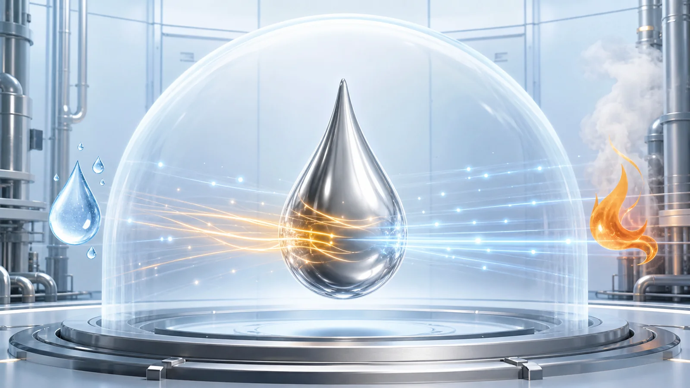
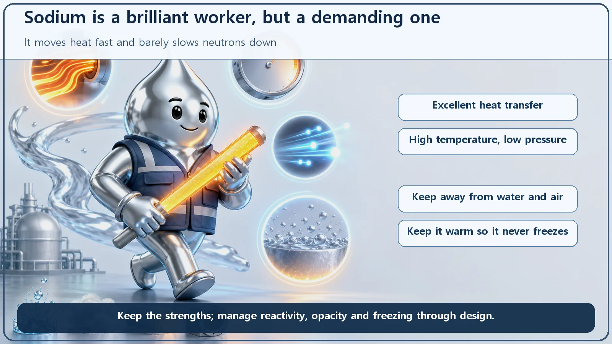
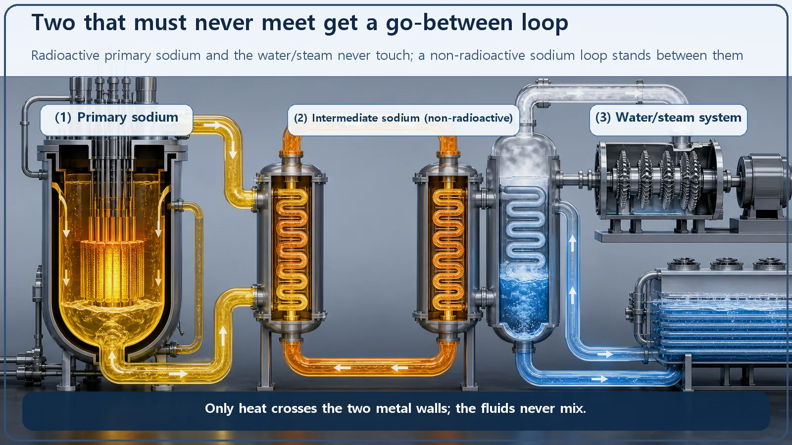

Reactor Types & Plant Systems · 181
The Star Employee Who Can't Go Near Water — The Sodium-Cooled Fast Reactor (SFR)
Liquid sodium carries heat superbly and barely slows neutrons, but it must be kept away from water and air. The design is built around both facts.

A sodium-cooled fast reactor (SFR) uses liquid sodium metal instead of water to cool its core. Sodium carries heat far better than water, barely slows neutrons and stays liquid up to about 883°C, so the reactor can run hot at near-atmospheric pressure. The price is a coolant that reacts with water and air, is opaque and freezes below about 98°C, and the plant is designed around exactly those facts.
A coolant that must stay away from water and air
Some workers will take any job, in any conditions. The nuclear world has one coolant that is the exact opposite: brilliant at its job, but it genuinely must be kept away from both water and air. That coolant is liquid sodium metal (Na), and a reactor that uses it is a sodium-cooled fast reactor, or SFR.
This article has one focus: why sodium? Why put a metal that reacts violently with water and can burn in air into the heart of a reactor? Because sodium has outstanding talents, and a temperament you accept in exchange.
Hiring for a very particular workplace
Think of it as a hiring decision for a fast reactor, which asks two unusual things of its coolant.
First, carry heat away very quickly: a fast reactor core is small and tightly packed, so an enormous amount of heat comes out of a small space. Second, slow neutrons down as little as possible: a fast reactor only works if its neutrons stay fast, and a coolant of light atoms, such as water, keeps colliding with neutrons and dragging their speed down.
Sodium meets both demands. As a metal it carries heat superbly, and its atoms are heavy enough that a neutron bouncing off one loses very little speed. Let's read the résumé.

The impressive skills on the résumé
Sodium's first talent is moving heat. Compare thermal conductivity, the measure of how readily a material conducts heat, and in the operating temperature range sodium comes out roughly tens of times higher than water. That is how it pulls a lot of heat out of a small, dense core.
Its second talent is reaching high temperatures at low pressure. Start with water, which boils at 100°C at 1 atmosphere. So a pressurized water reactor, the most common water-cooled design, keeps its water liquid at about 325°C by holding the whole system at roughly 150 atmospheres (about 15 megapascals). It's a pressure cooker: to raise the temperature, clamp the lid down harder.
Sodium plays by different rules. It melts at about 98°C and does not boil until about 883°C (at 1 atmosphere). With a boiling point that high, the sodium leaving the core can run at roughly 500–550°C with no danger of boiling, at a pressure close to atmospheric. Lower pressure means the vessel and piping don't have to be built as thick and strong, and there is less concern about the type of accident in which high-pressure water escapes and flashes violently to steam. (These temperatures and pressures are typical approximate values; they vary by design.)
With more than 300°C between the operating temperature (about 550°C) and the boiling point (about 883°C), a temperature rise doesn't immediately make the coolant boil and form a vapor film that would block cooling. That is a generous thermal margin, and a high outlet temperature also helps the efficiency of turning heat into electricity.
The fine print on the back of the résumé
The back of the résumé, though, is covered in red handling warnings: the price of using sodium.
The most famous warning: keep away from water. Sodium reacts violently with water, producing hydrogen gas and heat, and if that hydrogen ignites it can create flame and pressure. Yet the turbine at the end of the line is still driven by water and steam. Somewhere in the plant, sodium and water face each other across a thin metal wall, and if a tiny crack opens, a sodium-water reaction can occur. That doesn't make sodium reactors "simply dangerous": this behavior is a well-established chemical fact, so the plant is designed with it as a starting assumption.
Second: keep away from air. Liquid sodium exposed to oxygen or moisture in air can oxidize or burn (a sodium fire). So the empty space above the sodium in the system is filled with an inert, oxygen-free gas, usually argon, called the cover gas, to keep air out.
Third: you can't see inside. Fuel under water can be watched while it is replaced or inspected, but sodium is an opaque metal. Refueling and inspection rely on special remote sensing and inspection techniques such as ultrasound, plus precise machinery. That raises the difficulty and cost of operation and maintenance.
Fourth: keep it warm. Below about 98°C, sodium freezes solid. Even during shutdown, piping must be kept above the melting point by preheating and heat-tracing equipment, or the sodium can solidify and block it.
Finally, sodium that passes through the core becomes radioactive by absorbing neutrons, mainly forming sodium-24, with a half-life of about 15 hours. All the more reason to keep it away from the water/steam system.
A go-between for two parties who must never meet
The primary sodium, the sodium that flows through the core, is radioactive and incompatible with water. To keep it from ever meeting water or steam, designers insert a second, non-radioactive sodium loop, the intermediate loop, between them. Heat passes from the primary sodium to the intermediate sodium, and from the intermediate sodium to the water and steam. Because three loops are chained together, this is called a three-loop arrangement.
Picture two people who would fight the moment they met: instead of putting them in one room, you send a go-between who carries the message, here heat, from one to the other. If water and sodium did meet in an accident, it would happen on the non-radioactive intermediate side, with equipment in place to detect it quickly, isolate it and relieve the pressure. The system is built around sodium's properties rather than hiding them.

Easy to mix up
"Fast reactor" means "sodium reactor." Not exactly. Sodium has been the most widely used fast reactor coolant, but there are fast reactors cooled by other liquid metals, such as lead or lead-bismuth, and by gases such as helium. This article covers only the sodium-cooled kind.
"Sodium reactors don't use water at all." Only half true. The core isn't water-cooled, but the turbine side usually still runs on water and steam, which is why the sodium-water interface matters so much.
"Low pressure makes sodium reactors automatically safer." Low pressure clearly removes the burdens of high pressure, but brings new challenges: sodium's reactivity, its opacity and the need to keep it warm. It is a trade, not a one-sided win. Sodium-cooled fast reactors have in fact been built and operated in several countries as research and demonstration reactors.
The one-line takeaways
- An SFR is a fast-neutron reactor cooled by liquid sodium metal instead of water.
- The strengths are clear: excellent heat transfer (high thermal conductivity), high temperature (about 500–550°C) at low pressure, almost no slowing of neutrons, and a large margin to the boiling point (about 883°C).
- So are the costs: it reacts violently with water to release hydrogen and heat, can burn in air, is opaque, freezes below about 98°C and must be kept warm, and the primary sodium becomes radioactive.
- The design assumes these properties, placing a non-radioactive intermediate sodium loop between the radioactive primary sodium and the water.
- A sodium reactor is neither "automatically safe" nor "automatically dangerous"; it trades demanding handling for outstanding cooling performance.
This star employee is as temperamental as it is talented. Nuclear engineering's job is to understand that temperament in detail and build a system that uses the talent while keeping the hazards contained.